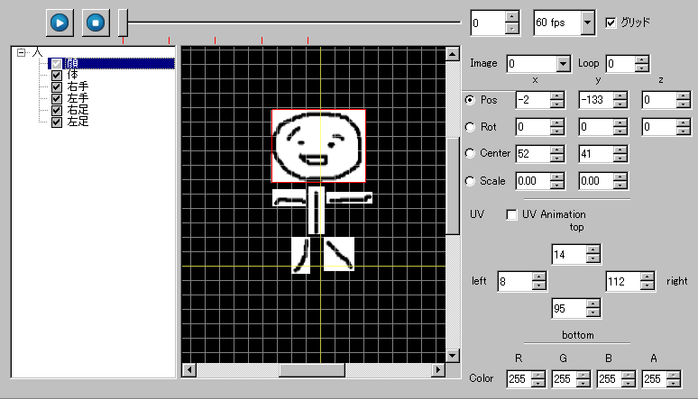
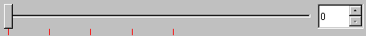
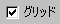
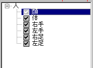
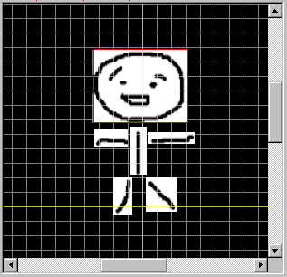
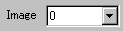
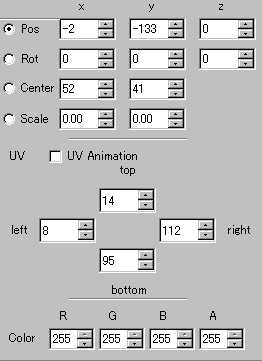

アニメーション ウィンドウ

アニメーションを作成するメインとなるウィンドウです。
再生ボタン。作成したアニメーションを再生します。
再生中は一時停止ボタンになります。
一時停止ボタン。再生中のアニメーションを一時停止します。
停止ボタン。再生中のアニメーションを停止します。

選択中のフレーム数を変更します。
データのある場所には赤線が表示されます。

再生スピードを変更します。
数字は１秒にフレームの進む回数を表しています。
60fps・・・約16.6ミリ秒に1フレーム進みます。
30fps・・・約33.3ミリ秒に1フレーム進みます。
15fps・・・約66.6ミリ秒に1フレーム進みます。

アニメーションデータ配置部分にグリッドを表示するか指定します。

オブジェクト、レイヤツリーです。
画像では「人」がオブジェクト、「顔」「体」等がレイヤです。
自由に追加、削除ができます。
レイヤは非表示にもできます。レイヤ名の左にチェックが付いていれば
表示されています。

アニメーションデータ配置部分です。
選択中のレイヤには赤枠が表示されます。
主に、ここを操作してアニメーションを作成することになるでしょう。

選択中データのイメージ番号を選択します。
イメージウィンドウに複数の画像がある時、
イメージ番号を変更したいときに使用します。

選択オブジェクトのアニメーションループ回数を指定します。
-1の時は無限ループします。

選択中データの情報です。
この値を変更することで、データを操作することもできます。
Pos・・・位置。
Rot・・・回転角度。-360度～360度の間で変更できます。
Center・・・中心位置。この位置を中心に回転します。
Scale・・・拡大率。1.00が等倍です。
チェックのついている項目がマウス操作で変更できます。
※座標軸について
x軸・・・左から右にかけて値が大きくなります。
y軸・・・上から下にかけて値が大きくなります。
z軸・・・奥から手前にかけて値が大きくなります。
UV
top・・・イメージデータの上側の位置。
right・・・イメージデータの右側の位置。
bottom・・・イメージデータの下側の位置。
left・・・イメージデータの左側の位置。
UV Animation・・・アニメーション再生中にUVの値も補間するか指定します。
Color
R・・・赤
G・・・緑
B・・・青
A・・・透明度